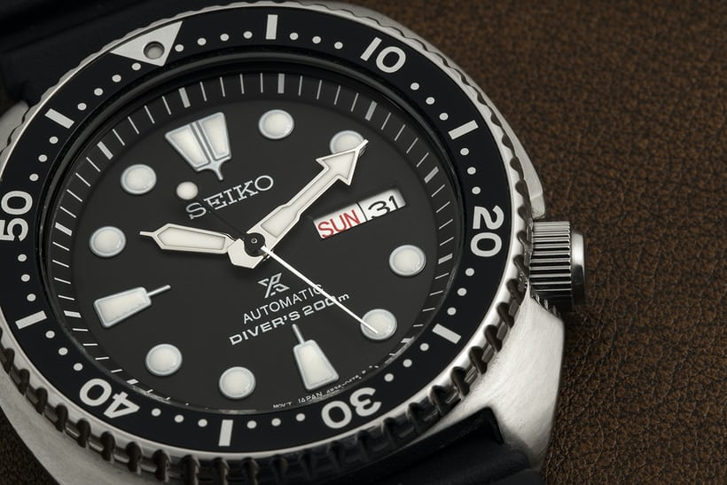
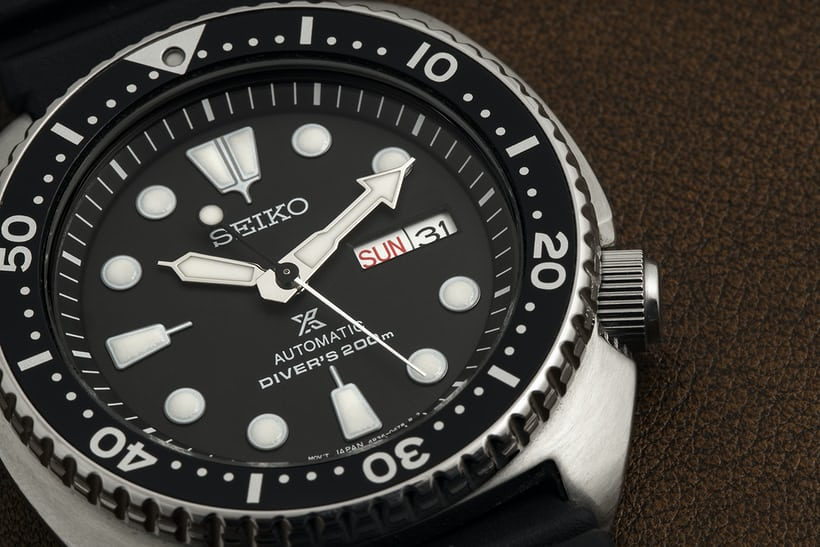

There are two main watch movements; automatic watches and quartz watches.
 



Quartz watches are powered by a battery and are usually extremely accurate. Automatic watches to not have a battery and are powered by a wound spring. Depending on the watch, the spring can get self wound if it is on someone's hand, or it can get manually wound by turning the crown of the watch.
Automatic: An automatic, or self-winding, movement is a mechanical movement first marketed in the beginning decades of the 20th century. It winds itself while worn on the wrist, eliminating the need for daily hand winding. However, if not worn for some time, the watch will stop and require a manual winding. This does not include taking the watch off before bed. Source: https://www.tourneau.com/watch-education/watch-movements.html#:~:text=The%20hands%20advance.-,AUTOMATIC%20MOVEMENT,and%20require%20a%20manual%20winding.
Image credits: Automatic: https://www.hodinkee.com/articles/best-mechanical-watches-under-1000-seiko-hamilton-tissot Quartz: https://www.hodinkee.com/articles/four-revolutions-quartz-revolution Person5: https://unsplash.com/photos/LIRZhTS-xzw Person7: https://unsplash.com/photos/IL6M6cmhEpM